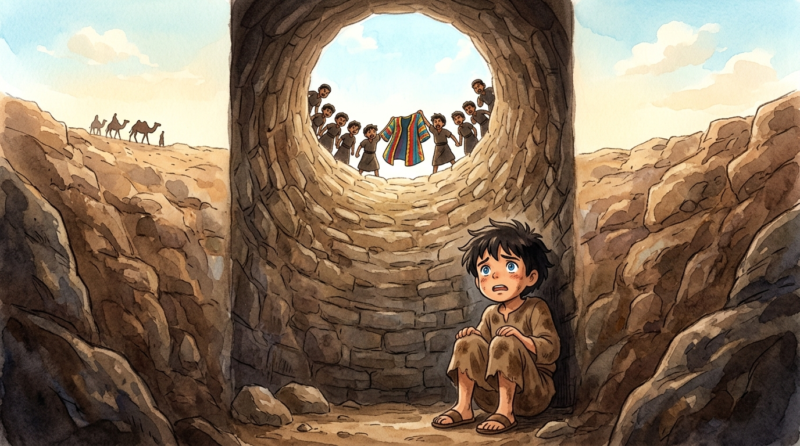
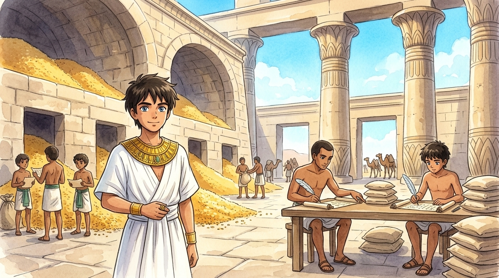
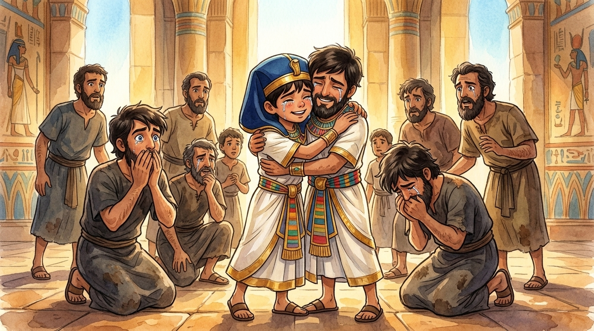

Long ago in the land of Canaan, a shepherd boy kept a diary. If we could read it today, it might sound something like this…1
Dear Diary — age 17, at home
Dad gave me a present today: a coat with SO many colors it looks like a sunset had a party. My ten older brothers each got… nothing. They stopped talking to me. I also had the strangest dream: eleven bundles of wheat bowed down to MY bundle. When I told my brothers at breakfast, I thought it would be interesting. It was not interesting. Simeon threw bread at my head.
Then I dreamed the sun, the moon and eleven stars bowed to me. I told everyone again. (Diary, you may be noticing that I tell people things too quickly. I am noticing this too. Slowly.)
"First the coat. Now dreams about us BOWING to him?! Who does this kid think he is — a king?"
Dear Diary — the worst day of my life
Dad sent me to check on my brothers far from home. When they saw my colorful coat coming over the hill, they grabbed me, tore off the coat, and threw me into a dry well — a deep, dark pit. I shouted until my voice was gone. Then I heard camels. Traders were passing by on their way to Egypt, and my own brothers sold me to them for twenty pieces of silver.2 Sold. Like a sack of wheat.
They kept my coat. Later I learned they dipped it in goat's blood and told Dad a wild animal got me. Dad cried for days and days.

Diary, here is the strange thing I want to remember: on that camel ride to Egypt, scared and alone, I did not feel completely alone. It was as if Someone rode with me. Grandpa Isaac always said God keeps His promises even in dark places. We would see.
Dear Diary — Egypt, year after year
I was sold to Potiphar, captain of Pharaoh's palace guard. I decided that even as a servant, I would work as if I were working for God Himself. And — Diary, this kept happening — everything I touched went well. Potiphar noticed. Soon I was running his whole house!
Then trouble found me again. Potiphar's wife wanted me to do something wrong — something that would betray Potiphar's trust and break God's rules. I said no. I kept saying no. One day I had to run out of the room so fast that she was left holding my cloak — and then she used that cloak to tell everyone a terrible lie about me. Potiphar believed her. That cloak business again, Diary! Every time someone takes my coat, my life falls apart.
So: prison. For doing the right thing.
"God, I don't understand. I honored You, and I ended up in chains. But if You were with me in the pit, I'll trust You're with me in the prison too."
And He was. The prison warden put me in charge of all the prisoners. (In charge! Of a prison! From the inside! My life is very strange.) There I met Pharaoh's cupbearer and baker, both locked up, both troubled by dreams. God showed me what their dreams meant, and both came true exactly. "When you get out," I asked the cupbearer, "please mention me to Pharaoh?" He promised.
He forgot. For two whole years.
Dear Diary — the day everything changed
This morning I woke up a prisoner. Tonight I go to sleep as — Diary, you will not believe me — the second most powerful man in Egypt.
Pharaoh had two nightmares nobody could explain: seven skinny cows gobbling up seven fat cows, and seven thin wheat heads swallowing seven full ones. Suddenly the cupbearer remembered me. I was scrubbed, shaved and standing before the throne within the hour.3
Pharaoh looked at me a long time. Then he said, "Can we find anyone like this man, in whom is the spirit of God?" He put his own ring on my finger and made me governor over all Egypt. For seven years I filled storehouses until we lost count of the grain. Then the famine came, just as God had said — and it swallowed every land, including Canaan. Including home.

Dear Diary — they came
Ten hungry men from Canaan bowed low before me today, faces to the floor, begging to buy grain. Diary… it was them. My brothers. Twenty years older, and they had no idea the Egyptian governor in front of them was the boy from the pit. As they bowed, I remembered my dream of the bowing wheat bundles — it was coming true, and I had goosebumps.
I could have done anything to them. Anything. Instead, I tested them — I wanted to know if their hearts had changed. I kept my little brother Benjamin's fate hanging in the balance and watched what they would do. And Judah — the very brother whose idea it was to sell me — stepped forward and said: "Take me as your slave instead of the boy. I cannot bear to see my father's heart break again."
That was when I couldn't hold it in anymore. I sent every servant out of the room, and I cried so loudly the whole palace heard me.

Dear Diary — the last page
Dad and my whole family live in Egypt now, safe and fed, all seventy of them. When I look back — the pit, the lies, the prison, the forgetting — I can finally see it: none of it was wasted. God was quietly weaving every dark thread into a rescue plan bigger than I could dream. And I'm the guy who dreams big.
So if you ever land in a "pit" — a rotten, unfair, nobody-understands-me kind of day — remember Joseph's diary. God has not lost track of you. He can take the worst thing that ever happened to you and weave it into something good. He's very, very good at that. ⭐